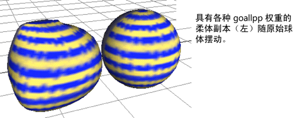

- 生成柔体(Make Soft)
-
将对象转化为柔体。如果未设置对象的动画，并将使用动力学（例如，一个场）设置其动画，请选择该选项。如果已在对象上使用非动力学动画，并且希望在创建柔体之后保留该动画，也请使用该选项。非动力学动画包括关键帧、运动路径、非粒子表达式和变形器。
影响柔体的粒子的动力学不受来自非动力学动画的动量的影响。动力学发生在粒子对象的局部空间中，不受对象上的其他动画的影响。

- 复制，将副本生成柔体(Duplicate, Make Copy Soft)
-
将对象的副本生成柔体，而不改变原始对象。如果使用该选项，则可以启用“将非柔体作为目标”(Make Non-Soft a Goal)（稍后进行介绍），以使原始对象成为柔体的一个目标对象。柔体跟在已设置动画的目标对象后面。可以编辑柔体粒子的目标权重以创建有弹性的或抖动的运动。
例如，假定选中“复制，将副本生成柔体”(Duplicate, Make Copy Soft)和“将非柔体作为目标”(Make Non-Soft a Goal)时，使球体成为柔体。接下来，设置关键帧以设定目标对象的运动的动画，目标对象就是原始球体。然后，赋予柔体副本的粒子各种 goalPP 值。在播放动画时，柔体副本在跟随原始球体时，会像抖动的凝胶一样变形。请注意，通常将通过启用“隐藏非柔体对象”(Hide Non-Soft Object)来隐藏原始球体。
有关目标和目标权重的详细信息，请参见目标。
使用“复制，将副本生成柔体”(Duplicate, Make Copy Soft)的另一种方法是在禁用“将非柔体作为目标”(Make Non-Soft a Goal)时重复使用它。这样会创建一个对象的多个相同柔体副本。可以独立于原始对象设置每个副本的动画。
注： “复制，将副本生成柔体”(Duplicate, Make Copy Soft)选项失去多个材质在多边形对象上的指定。直到保存并重新加载文件之后，才可能看到该问题已发生。在多边形对象上仅有单个材质时，不会发生该问题。若要解决该限制，必须重新指定这些材质或使用“复制，将原始生成柔体”(Duplicate, Make Original Soft)选项。
- 复制，将原始生成柔体(Duplicate, Make Original Soft)
-
该选项的使用方法与“复制，将副本生成柔体”(Duplicate, Make Copy Soft)类似，除了它使原始对象成为柔体，然后复制原始对象之外。
当对象的下游构建历史要求使用原始对象而不是副本作为柔体时，请使用“复制，将原始生成柔体”(Duplicate, Make Original Soft)。
例如，因为 IK 样条线要求使用原始曲线，而不是副本来控制其关节链，所以必须使用“复制，将原始生成柔体”(Duplicate, Make Original Soft)以使 IK 样条线成为柔体。如果还启用了“将非柔体作为目标”(Make Non-Soft a Goal)，则可以设置曲线的副本（目标）的动画来控制柔体 IK 样条线的运动。
- 复制输入图标(Duplicate Input Graph)
-
使用任一“复制”选项创建柔体时，复制上游节点。如果原始对象具有希望能够在副本中使用和编辑的依存关系图输入，请启用该选项。
- 隐藏非柔体对象(Hide Non-Soft Object)
-
如果在创建柔体时复制对象，那么其中一个对象会变为柔体。如果启用该选项，则会隐藏不是柔体的对象。
请注意，如果以后需要显示隐藏的非柔体对象，可以在“大纲视图”(Outliner)中选择该对象，然后选择“显示 > 显示 > 显示当前选择”(Display > Show > Show Selection)。
- 将非柔体作为目标(Make Non-Soft a Goal)
-
启用该选项可使柔体跟踪或移向从原始几何体或重复几何体生成的目标对象。使用“绘制柔体权重工具”(Paint Soft Body Weights Tool)，可通过在柔体曲面上绘制来基于每个粒子设置柔体上的目标权重。有关“绘制柔体权重工具”(Paint Soft Body Weights Tool)的信息，请参见“绘制柔体权重工具选项”(Paint Soft Body Weights Tool Options)。
若要在创建柔体之后编辑柔体粒子的目标权重，请参见编辑目标属性。目标权重为 0 可使柔体自由地弯曲和变形。值为 1 可使柔体变得僵硬；它紧跟在其目标对象的轮廓后面。
请注意，如果在禁用“将非柔体作为目标”(Make Non-Soft a Goal)的情况下创建柔体，仍可以为粒子创建目标。选择柔体粒子，按住 Shift 键并选择要成为目标的对象，然后选择。
- 权重(Weight)
-
设定柔体在从原始几何体或重复几何体生成的目标对象后面有多近。值为 0 可使柔体自由地弯曲和变形。值为 1 可使柔体变得僵硬。0 和 1 之间的值具有中间的刚度。
提示： 通常会将场应用于柔体而不是非柔体。如果不启用“隐藏非柔体对象”(Hide Non-Soft Object)，则使用“大纲视图”(Outliner)可选择柔体，而不选择非柔体。如果无意中将场应用于非柔体，它会变成默认情况下受该场影响的刚体。通常不希望发生这种情况。很可能更愿意设置其运动的关键帧或将其单独留在那里。柔体之间的碰撞（包括柔体与自身的碰撞）可能会产生意外的结果，特别是当柔体在碰撞之后向着彼此移动时。